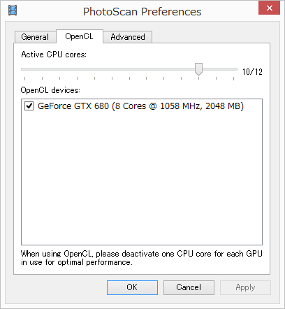

5. PhotoScan初期設定
（注：バージョンが古いのでレイアウトが異なります）
ツールの場所やFigはWindows OS版であり、Macなどとは異なることがある。
初期設定「Tools」-「Preferences」
Preferencesでは、OpenCL（GPU計算）関連の設定（Fig5.1）、画像マッチング関連の設定（Fig.5.2）を行う。

Fig.5.1 OpenCLの設定
GPUを計算処理に利用する場合は、
- OpenCL devicesにリストアップされたGPUボードにチェックを入れる。
- GPUボード1枚につき、GPU管理用のCPUの「物理コア」が1つ必要になる。Active CPUcoresの設定を一つ減じる。ただし、CPUのハイパースレッディングが有効な場合は2つ（物理コア1+仮想コア1=完全な物理コア1）を減じること。
（注：最新版では自動で使用するCPU数を変更するようです）
OpenCL devicesにリストアップされない場合、その計算機に搭載されているGPUはPhotoScanで利用できない。OpenCL対応のGPUにもかかわずリストアップされない場合は、最新のGPUドライバをインストールしてOSに正しくGPUデバイスを認識させる必要がある。OSがただしく認識していれば、特別な操作をすることなくリストアップされる。